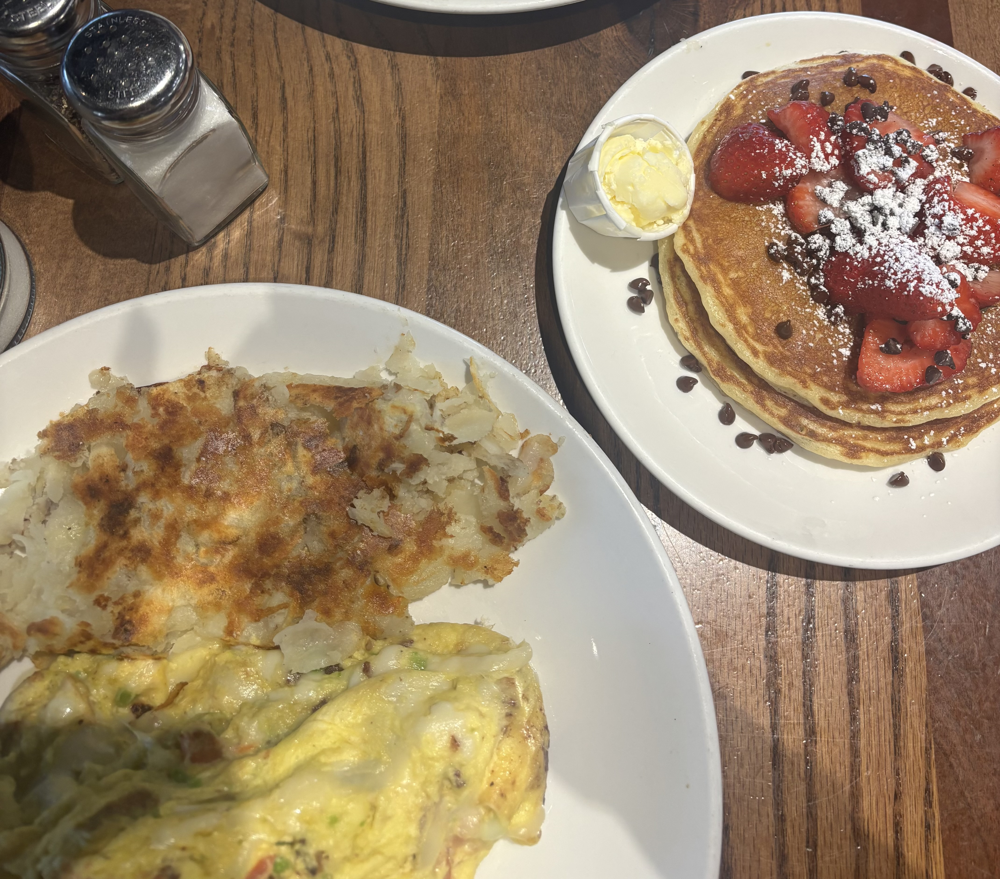
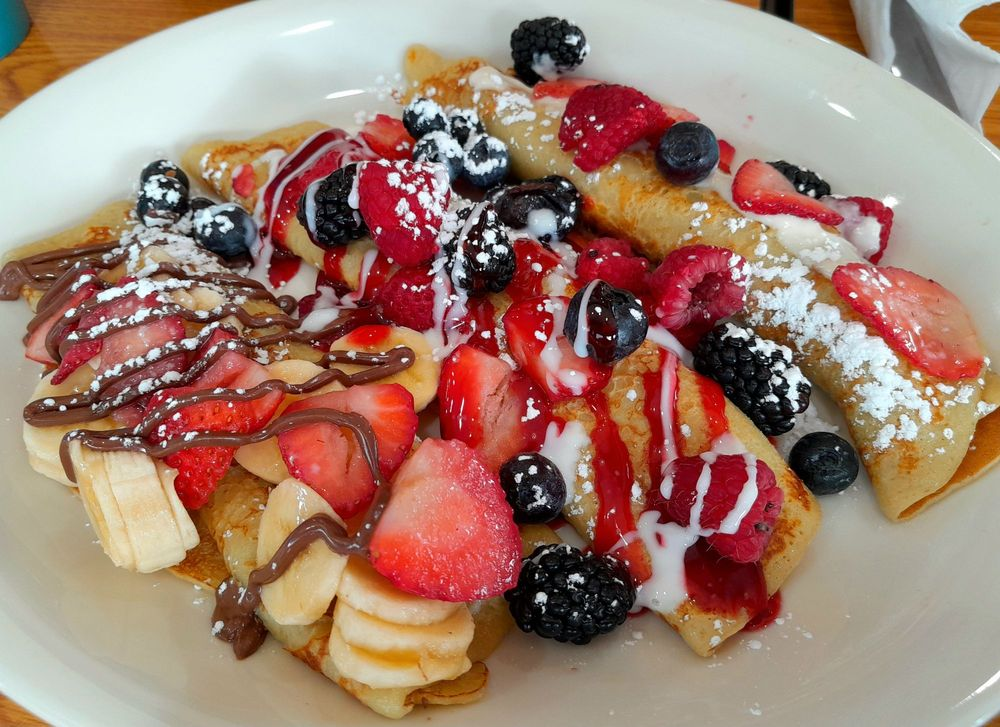
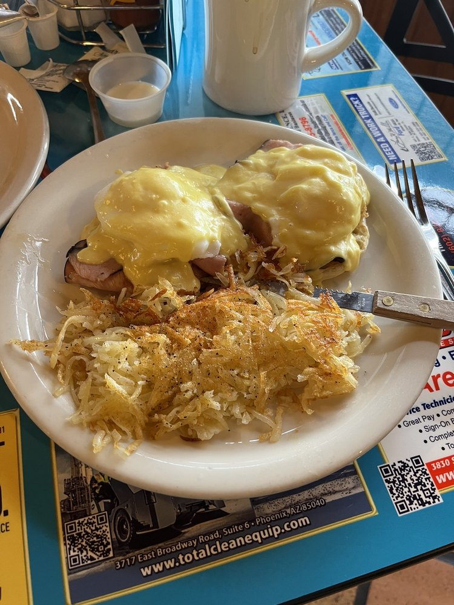

Breakfast Reviews
Breakfast is one of my favorite meals to review because there are so many options, from quick coffee and pastries to full breakfast plates. Check out my reviews below to find a breakfast spot that is worth your time and money.
Butters Pancakes & Cafe

My Takes
I really enjoyed my experience at Butters Pancakes & Cafe! The food was delicious, and I especially loved how fluffy the pancakes were. The portions were also really generous, so I definitely left feeling full and with leftovers! The atmosphere was fun, but it can get pretty busy and loud. Overall, I would come back and recommend Butters if you're looking for the fluffiest pancake ever!
What I Ordered
I ordered the Denver omelette and strawberry chocolate chip pancakes!
Price & Value
My meal cost approximately $30 without tax and tip. I believe both meals are extremely filling. However, if I were to go again, I would lean toward the pancake over the omelette!
My Rating
Hope's Brunch House

My Takes
If you're looking for a cute place to grab breakfast / brunch, Hope's Brunch House is a great option. I loved the overall atmosphere, and the food was delicious! There were plenty of options to choose from, which made it easy to find something I was craving. This is definitely a spot I would go back to!
What I Ordered
I got the Crepe Sampler Plate!
Price & Value
The sampler was $17. In full honesty, it was very good since I was wanting a sweeter breakfast, but if I were to get crepes again, I would order the Classic Combo. It is $16 and has crepes, eggs, bacon, and a sausage patty - definitely more of a bang for your buck!
My Rating
The Peppersauce Cafe

My Takes
The Peppersauce Cafe is a fun spot to switch things up for breakfast. I really like the variety on the menu, and the food was flavorful and filling! The portions were generous, and I felt like there were plenty of options to choose from. The atmosphere was also super comforting and homey, making it a nice place to just sit and relax!
What I Ordered
I ordered the Classic Benedict Plate!
Price & Value
My meal was approximately $14, which is a fantastic deal! I feel like it is a good amount of food for an extremely affordable price, as well as the rest of their menu. I would be satisfied ordering any item off of the menu and feel like I got my money's worth!
My Rating
Breakfast at a Glance
| Restaurant | Price | Rating | Best for |
|---|---|---|---|
| Butters Pancakes & Cafe | $$ | ★★★☆☆ | Fluffy pancakes |
| Hope's Brunch House | $ | ★★★★☆ | Variety and satisfying different cravings |
| The Peppersauce Cafe | $ | ★★★★★ | affordable prices |